Auto estima
Sabia que, mesmo criança, a autoestima tem de ser nutrida? Com os pequenos, o processo de aumentar
a autoestima é, por exemplo, ensinando a fazer coisas rotineiras e reconhecendo quando eles conseguem!
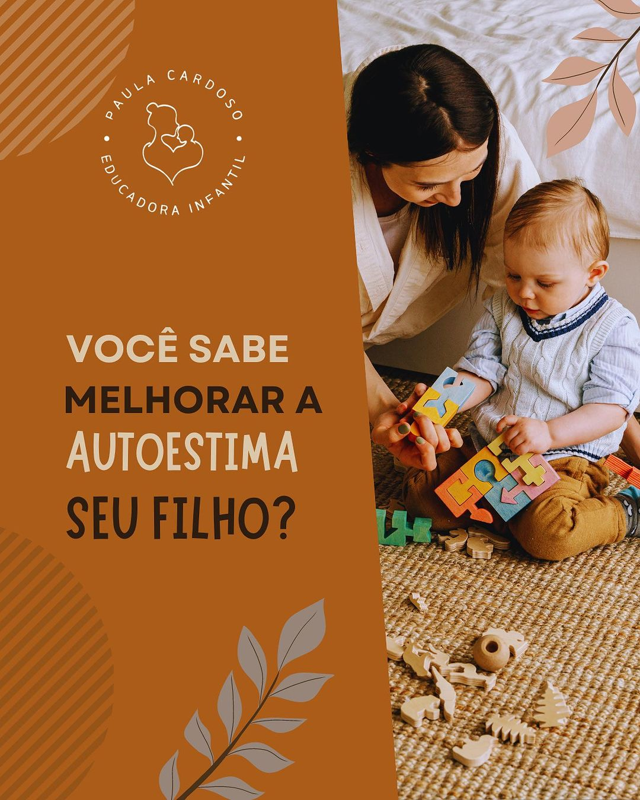
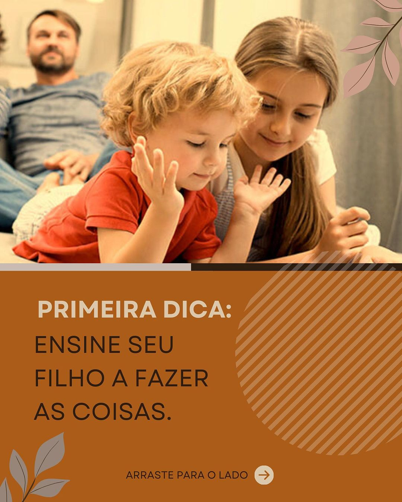
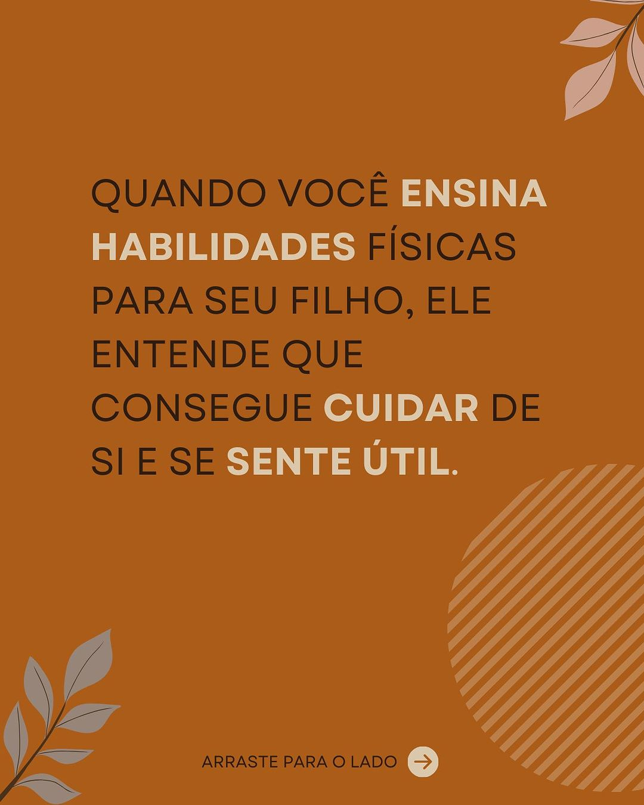
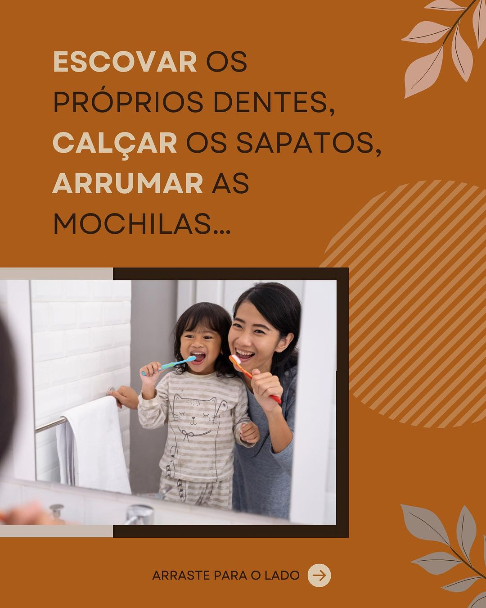
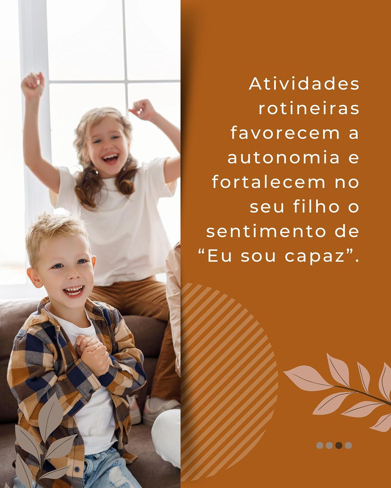
Uma das chaves para boa relação confiança com seu filho é a confiança
E não duvide: mesmo uma promessa “boba” ou “simples” importa. E MUITO!!!
⚠️ Seja bebê, criança ou adolescente, se prometer que seja uma bala, CUMPRA com a promessa.
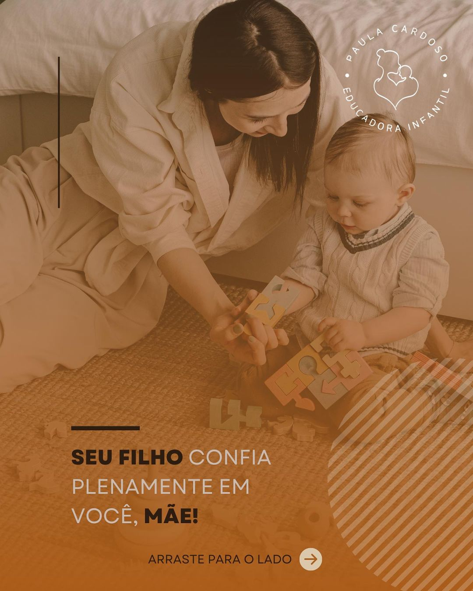
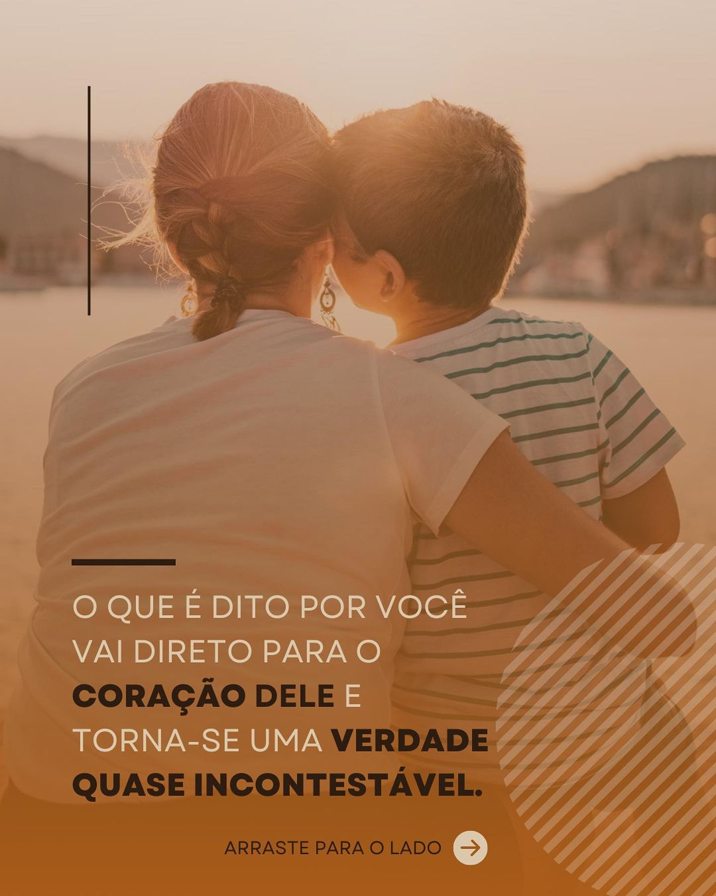
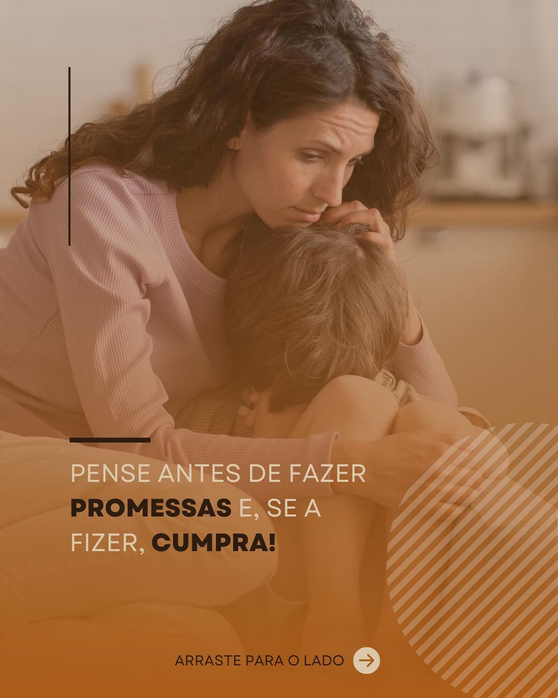
Vamos aprender sobre como conduzir os desafios da educação infantil?
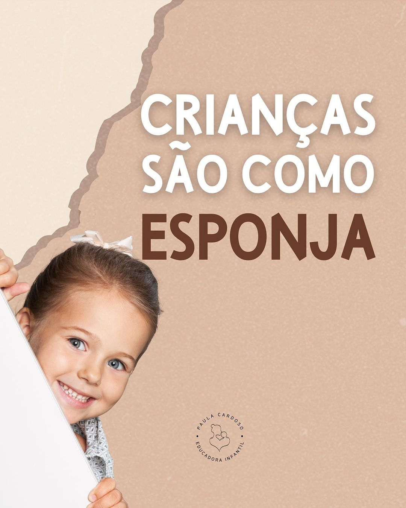
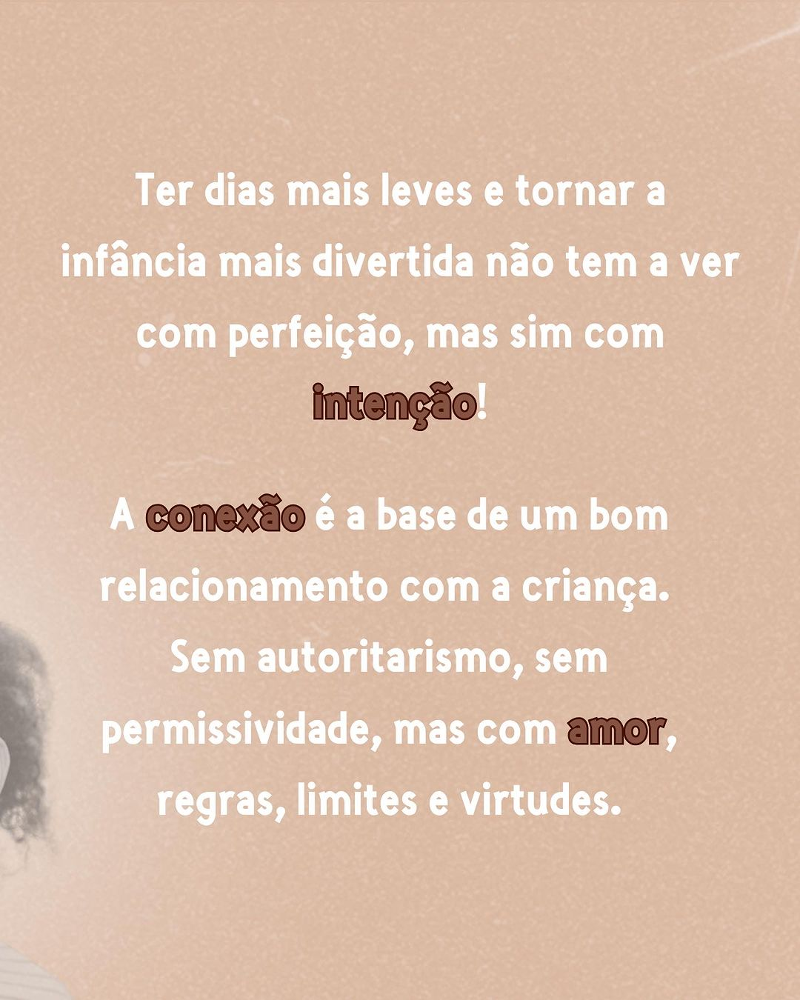
Você já havia pensado na importância do ócio?
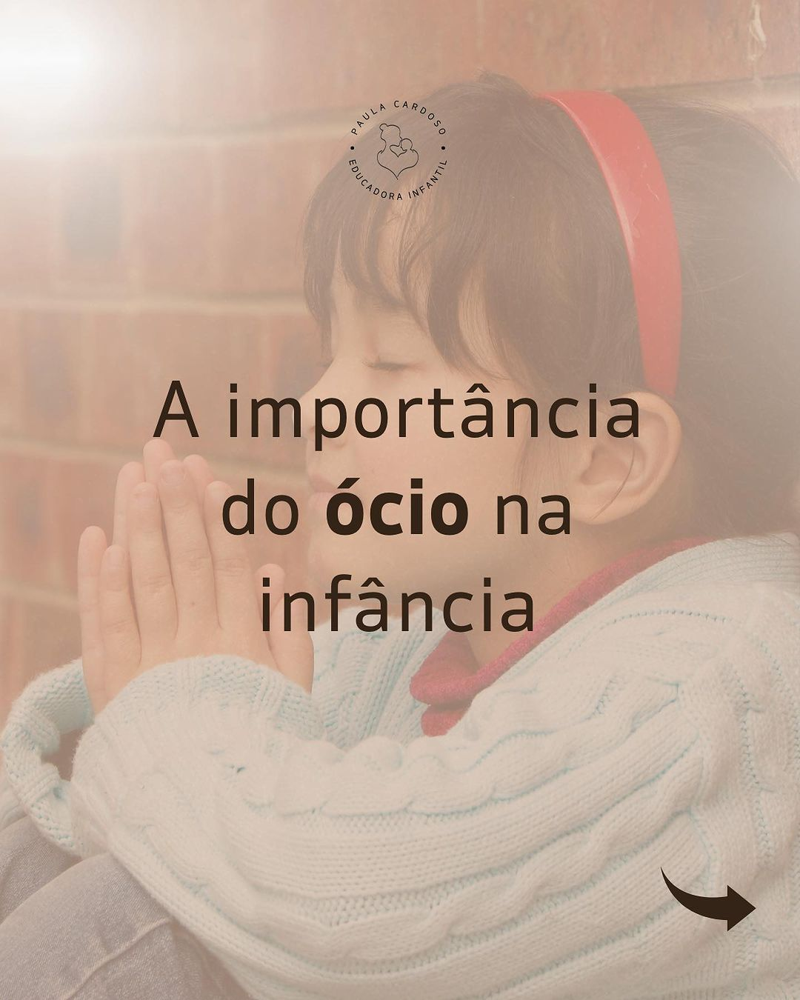
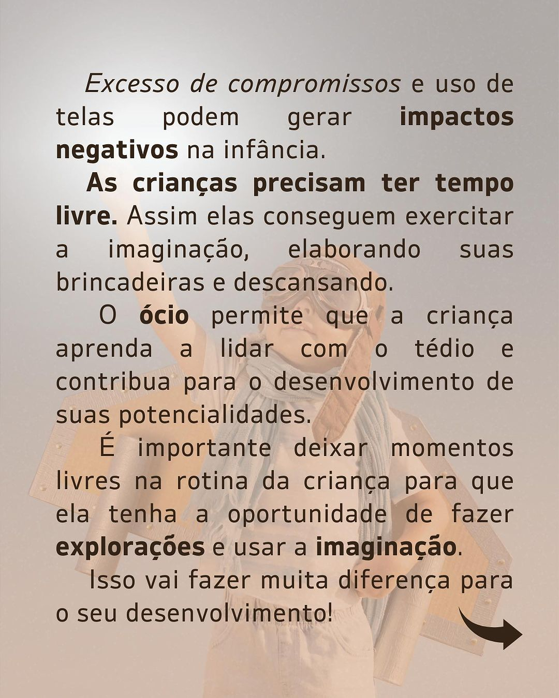